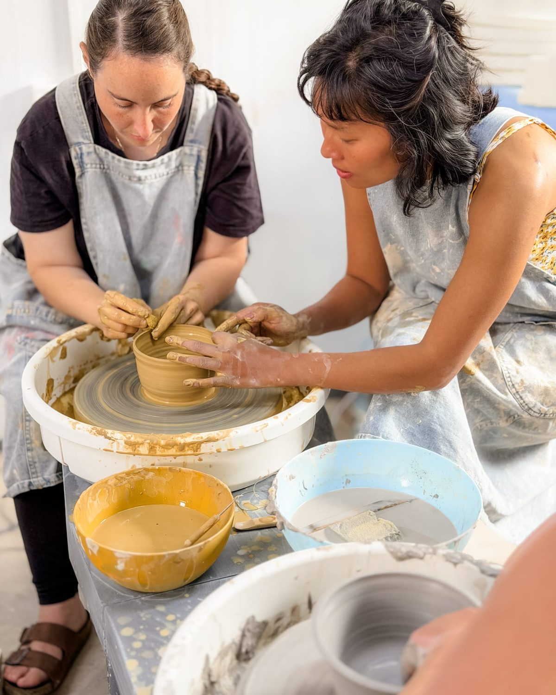
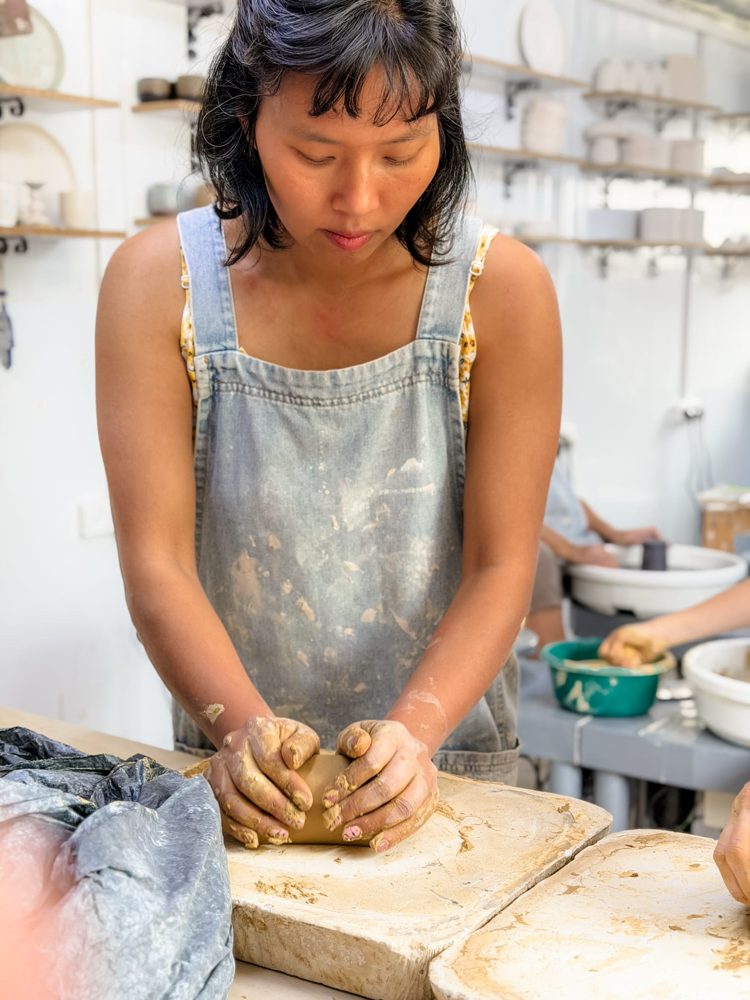

כלי חימר טרי על האובניים · 4:3
קדרות ופיסול
יושבים אל האובניים, וכל אחד יוצא עם כלי שיצר בעצמו.
מתאים לזוגות, מבוגרים וילדים בוגרים
330 ₪ למשתתףלפרטים והרשמה
סטודיו קטן וממוזג במושבה כנרת. רחל מדריכה כל סדנה באופן אישי, ליד כל אחד ואחת, מתאים גם למי שמעולם לא נגע בחימר.

בוחרים מועד שפנוי, ומשלמים כאן באתר.
יושבים אל האובניים, וכל אחד יוצא עם כלי שיצר בעצמו.
מתאים לזוגות, מבוגרים וילדים בוגרים
בוחרים כלי, מציירים עליו ולוקחים אותו הביתה.
מגיל 3, מושלם למשפחות עם ילדים קטנים
תאריך, שעה וכמה אתם.
אישור ההרשמה מגיע למייל מיד.
הכל מוכן ומחכה לכם, גם הסינרים.
כל אחד עם הכלי שלו.


הסטודיו הזה הוא המקום שלי במושבה כנרת. אני מדריכה כל סדנה בעצמי, יושבת ליד כל אחד ומראה איך מרגישים את החימר. לא צריך ניסיון ולא צריך להביא כלום. רק לבוא עם זמן פנוי ובגדים שלא אכפת לכם שיתלכלכו :)
כבר אירחתי כאן 45 עובדים של תנובה בבת אחת. ספרו לי מה אתם מתכננים, ואחזור אליכם עם הצעה.
בכלל לא. רוב מי שמגיע לסטודיו נוגע בחימר בפעם הראשונה. אני לידכם לאורך כל הסדנה.